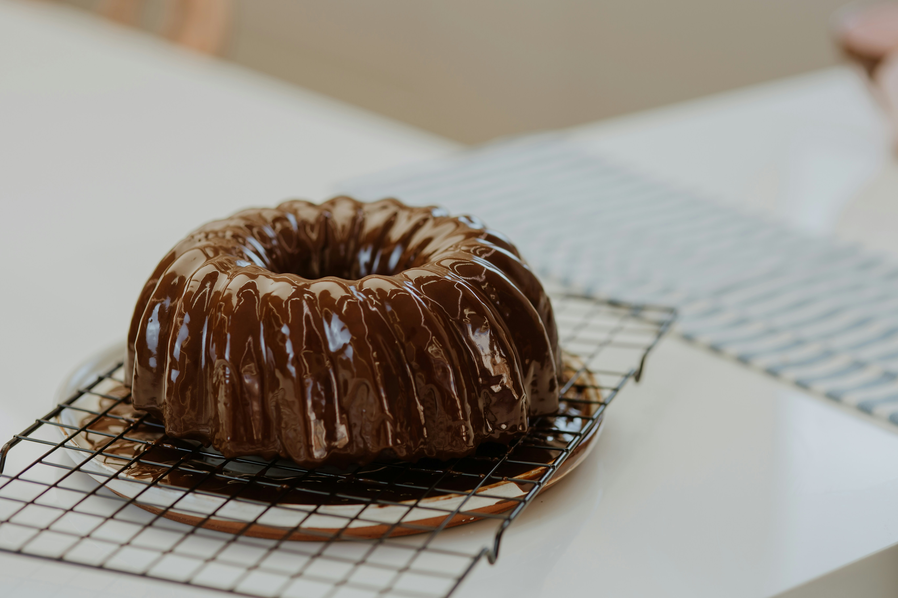

Chocolate Angel Food Cake
Home

Description
>A light and airy chocolate angel food cake made with whipped egg whites, cake flour, and cocoa powder, baked in a tube pan.
Ingredients
- 2 cups egg whites
- ¼ teaspoon salt
- 1 ¼ teaspoons cream of tartar
- 1 ¼ cups white sugar
- 1 ¼ cups confectioners' sugar
- 1 ¼ cups cake flour
- ¼ cup unsweetened cocoa powder
- 1 ¼ teaspoons vanilla extract
Steps
- Preheat oven to 325 degrees F (165 degrees C).
- In a medium bowl, mix confectioners' sugar, cake flour, and cocoa. Sift together 2 times, and set aside.
- In a clean large bowl, whip egg whites, salt, and cream of tartar with an electric mixer on high speed until very stiff.
Fold in white sugar 2 tablespoons at a time while continuing to mix.
Fold in flour mixture, a little at a time, until fully incorporated. Stir in vanilla. Pour into a 10 inch tube pan.
- Bake at 325 degrees F (165 degrees C) for approximately 1 hour, or until cake springs back when touched.